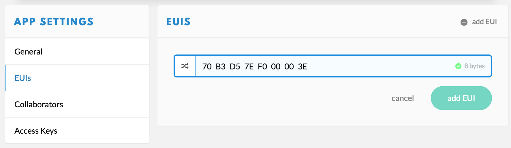

Migrate from Staging to Production
This guide will walk you through migrating applications and devices from staging.thethingsnetwork.org to production at console.thethingsnetwork.org.
For the announcement and discussion of the launch of production see the forum.
The migration does not require any changes to devices that use OTAA (the default). Devices that use ABP will need their sketch to be updated with a new Device Address.
Messages will be routed to the new backend automatically once you have migrated a device and will no longer be delivered to staging.
Applications
For each application you’d like to migrate:
- On staging, click the application you’d like to migrate to see the Application Info box.
-
In production, go to add application.
- For Application ID, use anything you like as long as it is unique and only uses low case alphanumeric charachters and nonconsecutive
-and_. - For Description, copy the Application name from staging.

- For Application ID, use anything you like as long as it is unique and only uses low case alphanumeric charachters and nonconsecutive
- From the Application Overview page of the newly created application, click Settings on the top right.
- Under App Settings select EUIs.
- Click remove right of the App EUI that was generated for you.
-
Click the add EUI or Add one! link.
- Click to customize the EUI.
- Copy-paste the App EUI from the Application Info box on staging.

Payload Functions
If you have customized the payload functions you’ll need to migrate those as well:
- On staging, in the Application Info box click edit after Payload Functions.
- In production, select Payload Functions from the top right menu of the migrated application.
-
For each of the Payload Functions you have customized:
- Copy-paste the function body from staging to production.
-
Update the functions, following these signatures:
- Functions are no longer anonymous.
- You can leave the name of the first argument as you had it in staging.
- Functions have an optional second argument for the port.
function Decoder(bytes, port) { return { /* fields */ }; } function Converter(decoded, port) { return decoded; } function Validator(converted, port) { return true; } function Encoder(object, port) { return [ / * bytes */ ]; }
Devices
For each device you’d like to migrate:
- On staging, go to the application you’d like to migrate devices from.
- In the Devices box click the Dev EUI of the device you’d like to migrate to see its Device info box.
- In production, go to the migrated application.
- Scroll down to Devices or select Devices from the top right menu.
- Click register device.
- For Device ID, use anything you like as long as it is unique and only uses alphanumeric charachters and nonconsecutive
-and_. - For Device EUI, click customize it and copy-paste the Dev EUI from staging.
- For App Key, click customize it and copy-paste the App Key from staging.
- For App EUI, click to select the App EUI from staging which you added when you migrated the application.

- For Device ID, use anything you like as long as it is unique and only uses alphanumeric charachters and nonconsecutive
-
Click Register to finish.
Made a mistake? You can always come back to a device and select Settings from the top right menu to change all of the above settings, except the Device ID.
-
On staging, delete the device or you will risk join accept and routing conflicts.
- On staging, go to the migrated device.
- Scroll down to the bottom and click the red Delete device button.
Important: If your application on staging used to activate devices with a Default App Key, activations in staging should be disabled for your App EUI. This requires your App EUI to be blacklisted in staging. To request a blacklist, please file a request through The Things Network’s Slack #support channel. Request a Slack invite for your account
Devices registered for ABP
If you had your device registered for ABP, follow these additional steps:
- Navigate to the migrated device if you’re not there already.
-
Select Settings from the top right menu.
- For Activation method select ABP.
- For Network Session Key, click and copy-paste the Network Session Key from staging.
- For App Session Key, click and copy-paste the App Session Key from staging.
- Click Save, which will redirect you back to the device screen.
- Connect the device.
-
Update the following line of your sketch with the generated Device Address:
const char *devAddr = "00000000";
MQTT
If you have been using the MQTT broker at staging.thethingsnetwork.org, then this section will help you migrate to one of the new production brokers at <Region>.thethings.network.
Region-specific hostname
In staging you connected to staging.thethingsnetwork.org. Replace this with <Region>.thethings.network. See MQTT / Quick Start / Credentials to learn what region to use.
Application EUI becomes ID
In staging you used the Application EUI as username and as first element in all topics. Replace this with the Application ID.
Staging:
mosquitto_sub -h staging.thethingsnetwork.org -t '#' -u <AppEUI -P '<AppKey>' -v
Production:
mosquitto_sub -h <Region>.thethings.network -t '#' -u '<AppID>' -P '<AppKey>' -v
Activations
The topic has changed to <AppId>/devices/<DevId>/events/activations.
The JSON encoded payload has also changed on several points. Update the code where you process it.
Staging:
{
"metadata": [{
"frequency": 868.1,
"datarate": "SF7BW125",
"codingrate": "4/5",
"gateway_timestamp": 3475324075,
"channel": 0,
"server_time": "2016-09-12T14:00:16.614852216Z",
"rssi": -42,
"lsnr": 9.2,
"rfchain": 1,
"crc": 1,
"modulation": "LORA",
"gtw_id": "B827EBFFFE87BD22",
"altitude": 10,
"longitude": 5.90418,
"latitude": 52.95904
}]
}
Production:
{
"app_eui": "70B3D57EF000001C",
"dev_eui": "0004A30B001B7AD2",
"dev_addr": "26012723",
"metadata": {
"time": "2016-09-13T09:59:02.90329585Z",
"frequency": 868.5,
"modulation": "LORA",
"data_rate": "SF7BW125",
"coding_rate": "4/5",
"gateways": [{
"gtw_id": "eui-b827ebfffe87bd22",
"timestamp": 1484146403,
"time": "2016-09-13T09:59:02.867283Z",
"channel": 2,
"rssi": -49,
"snr": 7,
"rf_chain": 1
}]
}
}
Note that you now receive the Application EUI and the Device EUI and Address. Also, Gateway metadata can now be found in an array of all gateways that forwarded the activation.
Uplink payload
The JSON encoded payload has changed on several points. Update the code where you process it.
Staging:
{
"payload": "AQ==",
"fields": {
"led": true
},
"port": 1,
"counter": 15,
"dev_eui": "0004A30B001B7AD2",
"metadata": [{
"frequency": 867.3,
"datarate": "SF7BW125",
"codingrate": "4/5",
"gateway_timestamp": 3662434019,
"channel": 4,
"server_time": "2016-09-12T14:03:23.729350993Z",
"rssi": -43,
"lsnr": 8.8,
"rfchain": 0,
"crc": 1,
"modulation": "LORA",
"gtw_id": "B827EBFFFE87BD22",
"altitude": 10,
"longitude": 5.90418,
"latitude": 52.95904
}]
}
Production:
{
"port": 1,
"counter": 0,
"payload_raw": "AQ==",
"payload_fields": {
"led": true
},
"metadata": {
"time": "2016-09-13T09:59:08.179119279Z",
"frequency": 868.3,
"modulation": "LORA",
"data_rate": "SF7BW125",
"coding_rate": "4/5",
"gateways": [{
"gtw_id": "eui-b827ebfffe87bd22",
"timestamp": 1489443003,
"time": "2016-09-13T09:59:08.167028Z",
"channel": 1,
"rssi": -49,
"snr": 8,
"rf_chain": 1
}]
}
}
Note that
payloadis nowpayload_rawandfieldshas been renamed topayload_fields. Also,dev_euiis no longer there and Gateway metadata can now be found in an array of all gateways that forwarded the activation.
Downlink payload
The JSON encoded payload to send a message has also changed. Update the code where you compose the payload.
Staging:
{
"payload": "AQ==",
"port": 1,
"ttl": "1h"
}
Production:
{
"payload_raw": "AQ==",
"port": 1
}
Note that
payloadhas been renamed topayload_rawandttlis no longer included. Also consider to use the newpayload_fields.
SDKs & Libraries
We are using a versioning format where the same major version means compatibility. All 2.x components will be compatible with each other, including the routing services, Console, Account Server, SDKs, platform integrations and libraries.
Arduino Library
Although version 1.x of the Arduino Library worked fine with both staging and production, we’ve released 2.x to follow the above convention. Get it via the Arduino IDE. This version (for now) continuous to work with staging as well.
Node.js SDK
For production use versions 2.x:
npm install --save ttn
Carefully study and compare the API References of 1.x and 2.x to migrate any application code that you use the SDK in.
The last version compatible with staging is 1.3.2:
npm install --save ttn@1.3.2
Node-RED Node
For production use versions 2.x:
npm install node-red-contrib-ttn
After updating you will need to update an perhaps even re-add some of the ttn-* nodes because there are a lot of breaking changes. Carefully study and compare the guides of 1.x and 2.x.
The last version compatible with staging is 1.0.0:
npm install node-red-contrib-ttn@1.0.0
Java SDK
For production use versions 2.x. Although 1.x already supported production and not staging, we bumped to 2.x to align it with other SDKs and components. As part of this we did change the package and class names in preparation for adding more APIs to this SDK.
Please check the Java guide for more details.
CLI
Versions 2.x of The Things Network CLI are compatible with production. See the Quick Start for installation instructions.
For staging, you can continue to use the v1-staging version. However, since account.thethingsnetwork.org is now production and staging has been renamed to v1.account.thethingsnetwork.org you will need to reconfigure it to use this new hostname.